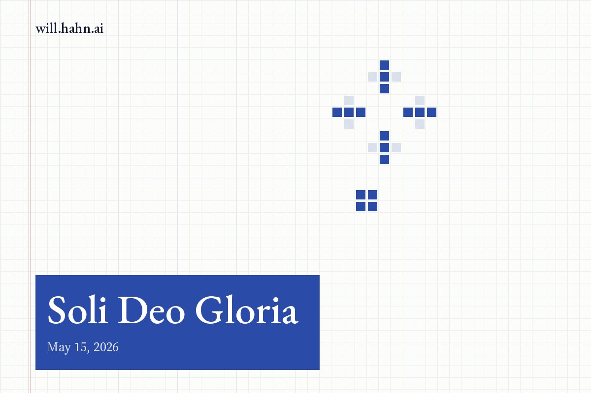

Soli Deo Gloria

The Rule Newton Could Not Quite Say
Newton is remembered for a refusal.
Hypotheses non fingo.
I feign no hypotheses.
It is one of the most famous methodological declarations in the history of science, and it helped create the modern image of Newton as the sober conqueror of speculation. No imaginary mechanisms. No metaphysical machinery. No ornate explanations invented merely because the mind dislikes incompleteness.
Newton would not pretend to know what he did not know. His laws would arise from phenomena, mathematics, and disciplined reasoning. The Principia would not be another castle of natural philosophy floating above the evidence. It would be a structure of stone.
But hidden near the edge of that refusal is a stranger fact.
Newton appears to have withheld, softened, or suppressed what scholars sometimes call his Fifth Rule of Reasoning: a broader methodological principle about how the mind may move from phenomena toward universal truth. The details matter less than the tension it reveals. Newton, the great enemy of feigned hypotheses, still needed a rule that gave science permission to do more than collect observations.
He needed a frame.
He needed a way to say that nature could be trusted beyond the immediate case. That what was seen here might hold there. That the order visible in falling bodies might also govern moons, planets, tides, and comets. That the universe was not a heap of local accidents but a coherent whole.
This is the secret at the foundation of modern science.
Newton did not build physics from facts and logic alone. No one does. He worked inside a larger vision of what the world is like, why the mind is entitled to search it for law, and why the search itself matters.
And for Newton, that vision did not end in nature.
It ended in God.
Soli Deo Gloria.
Science Begins Before the Experiment
The modern myth says science begins with observation.
It does not.
Science begins before observation, in the quiet act of deciding that observation is worth making.
A fact is never just a fact. It arrives inside a frame. Before the scientist measures, she has already made commitments about what counts as signal, what counts as noise, what kind of pattern might be real, and what sort of explanation would be satisfying.
These commitments are not ordinary hypotheses. They are deeper than that. They are not claims like “this planet follows this orbit” or “this chemical reacts under these conditions.” They are the hidden architecture beneath inquiry itself.
Nature is ordered.
Nature is mathematically legible.
The same laws apply across space and time.
Invisible causes may explain visible effects.
Simplicity is not merely convenient, but revealing.
These are thematic commitments. They are not mere decorations placed on top of science. They are the conditions that allow science to move at all.
A falling apple does not announce universal gravitation. A planet does not whisper the inverse-square law. A prism does not hand over a theory of light. Data do not organize themselves into a cosmos.
Someone has to believe the mess is hiding a form.
That belief is not a betrayal of science. It is the beginning of science.
The danger is not that science has such commitments. The danger is that science forgets it has them.
Newton Was Stranger Than the Myth
The Newton we inherit is too clean.
He has been polished into the patron saint of secular reason: the man of laws, forces, prisms, planets, and proofs. A mind so severe it could make the heavens submit to geometry.
But the real Newton was stranger.
The central figure of modern physics was not first and foremost a modern secular rationalist. He was a theist. More than that, he spent immense intellectual energy in territories we would now file under the occult: alchemy, biblical chronology, prophecy, hidden correspondences, ancient wisdom, the secret architecture of nature.
This is usually treated as an embarrassment, an unfortunate residue of the premodern world clinging to an otherwise modern genius. But that may be exactly backward.
Newton’s “occult” interests were not random hobbies sealed off from his physics. They belonged to the same hunger: the conviction that visible nature was the surface of a deeper order. The world was not flatly available to the senses. It had structure beneath appearance, intelligibility beneath motion, invisible agencies beneath visible effects.
Gravity itself was once attacked as an occult force because it seemed to act invisibly across empty space. Newton refused to explain its ultimate mechanism, but he also refused to deny its mathematical reality. He had no need to make nature small enough to fit the prejudices of the age.
This is the uncomfortable lesson.
The father of modern physics did not become great by evacuating mystery from the world. He became great by disciplining mystery until it yielded law.
The myth says science was born when reason defeated the occult.
Newton suggests something stranger: modern science was born when the search for hidden order was disciplined by mathematics.
Newton Did Not Study a Dead Machine
The modern caricature of Newton is that he turned the universe into a machine: cold, mathematical, impersonal, automatic.
But this is too shallow.
Newton did not see mathematical order as a substitute for God. He saw it as a sign of divine rationality. The laws of motion were not an argument against transcendence. They were evidence that the world was not chaos, not accident, not a brute heap of events.
The universe could be studied because it was ordered.
It could be mathematized because it was coherent.
It could be trusted because it was not ultimate.
That last point matters. For Newton, nature was real, but not final. It was intelligible, but not self-explaining. The beauty of physics was not that it eliminated mystery, but that it revealed a deeper kind of mystery: a cosmos whose regularity invited the mind into disciplined wonder.
Think of the audacity required to unify heaven and earth. Before Newton, the skies could still seem like a separate kingdom, a higher theater with different rules. Newton helped collapse that divide. The falling stone and the orbiting moon belonged to the same syntax.
This was not modest.
It was one of the great acts of intellectual compression in human history.
But it was not frameless. Newton’s confidence in universal law rested inside a larger theological imagination. Creation has order because God is not chaos. Truth can be pursued because reality is not deception. The human mind can discover because intelligibility is woven into the world.
Newton’s science had daring because the world was intelligible.
It had humility because the world was not ultimate.
That combination is what we have nearly lost.
The External Abstract
Every science needs an external abstract: a principle beyond its procedures that tells it what its procedures mean.
No field operates on facts alone. Facts require selection. Selection requires value. Value requires a frame.
Why search for simplicity rather than complexity?
Why assume the same laws apply here and there?
Why trust that invisible causes can explain visible effects?
Why believe the universe is intelligible at all?
The external abstract is not one more datapoint inside the system. It is the light by which the system becomes visible.
For Newton, that external abstract was not merely “nature is mathematical.” It was larger. Nature is mathematical because it is the work of a rational Creator. Its order is not arbitrary. Its intelligibility is not an accident. The human mind can discover truth because mind and world are not strangers; both participate, in different ways, in a deeper rational order.
This does not mean every equation becomes theology. It does not mean every experiment quotes Scripture. It means science once lived inside a larger moral and metaphysical architecture.
Truth was not merely useful.
Knowledge was not merely power.
Discovery was not merely control.
The scientist’s task was not to dominate reality, but to read it faithfully.
That is a radically different posture.
What Happens When the Horizon Vanishes
Modern science has not lost its tools.
It has lost its horizon.
It can sequence genomes, simulate climates, photograph galaxies, model contagion, and train machines on the accumulated residue of human language. It can extract signal from noise with terrifying precision. It can see farther, cut deeper, compute faster, and intervene more dramatically than any civilization before it.
But measurement is not meaning.
A civilization can become brilliant at detecting patterns and still forget why truth matters. It can build instruments powerful enough to see the beginning of stars while losing the moral vocabulary to ask what knowledge is finally for.
When science loses its external abstract, it does not become neutral.
It becomes available.
Available to markets.
Available to states.
Available to prestige.
Available to ideology.
Available to the institution, the weapon, the platform, the grant cycle, the algorithm, the machine.
Science never serves nothing. If it is not ordered to truth under God, it will be ordered to something else. The vacuum does not remain empty. A lower god moves in.
This is the great naivety of modern secular science: it imagines that by removing the highest end, it has removed worship. But worship remains. It is simply redirected.
Toward power.
Toward optimization.
Toward control.
Toward career.
Toward novelty.
Toward the intoxicating ability to make reality obey.
Without Soli Deo Gloria, science does not become purer. It becomes easier to capture.
Facts Cannot Save Us
The crisis is not that scientists lack intelligence. The crisis is that intelligence without orientation becomes technique.
Technique can split the atom and build the bomb.
Technique can decode the genome and design the market for edited life.
Technique can model attention and then addict it.
Technique can build artificial intelligence and hand it directly to the incentives of surveillance, persuasion, and scale.
The problem is not knowledge. The problem is knowledge without a sanctifying end.
Facts cannot decide their own use. Equations cannot confess their own limits. Data cannot generate wisdom by accumulation. A model can optimize perfectly and still drive straight into catastrophe if the objective function is false.
A missile optimizes.
A cancer cell optimizes.
An algorithm optimizes.
The question is always: toward what?
Modern science has become extraordinarily good at motion. More papers. More models. More compute. More interventions. More technical capacity. But motion is not progress unless it is ordered toward the good.
Acceleration is not ascent.
A civilization can move faster and still be falling.
This is why Newton’s hidden frame matters. He did not merely give science better mathematics. He worked inside an account of reality where truth was gift, order was creation, and discovery was not finally self-glorification.
The scientist was not the author of order.
The scientist was its reader.
The Wrong Imitation of Physics
Many younger sciences have tried to imitate physics by copying its surfaces.
Measurement.
Formalism.
Quantification.
Prediction.
These are valuable. But they are not the whole secret.
Physics did not become powerful because it refused all grand commitments. It became powerful because it chose fertile commitments and submitted them to reality. It trusted that nature was unified, mathematical, ordered, and intelligible. It believed that visible phenomena could reveal invisible structure.
To imitate physics while rejecting its deeper frame is to copy the skeleton and abandon the breath.
This is why so many fields become simultaneously more technical and less wise. They gain sharper instruments while losing the question that would tell them where to aim. They become crowded with methods and starved of meaning.
A science without an external abstract can still produce results. It can publish. It can measure. It can predict. It can optimize.
But it struggles to know what counts as progress.
It struggles to distinguish power from truth.
It struggles to say no.
And a science that cannot say no will eventually be mastered by whatever can say yes with money.
Glory as Method
Soli Deo Gloria is not a retreat from science.
It is the restoration of science’s proper scale.
To say “to God alone be the glory” is not to stop measuring, testing, modeling, falsifying, or revising. It is not to replace experiment with piety or mathematics with sentiment. It is to place the entire act of inquiry under an end large enough to discipline it.
Glory is not anti-rigor.
Glory is rigor with a horizon.
It tells the scientist: pursue truth fiercely, but do not confuse discovery with possession. Study nature deeply, but do not reduce it to inventory. Use mathematics boldly, but remember that elegance is received before it is written. Build, intervene, explain, and transform, but do not imagine that power is the same as authority.
This is not a small distinction. It changes the posture of the mind.
Without glory, nature becomes raw material.
With glory, nature becomes disclosure.
Without glory, knowledge becomes leverage.
With glory, knowledge becomes stewardship.
Without glory, the scientist becomes a technician of power.
With glory, the scientist becomes a witness to order.
The point is not to make science less ambitious. It is to give science an ambition worthy of the universe it studies.
The Myth of Neutral Inquiry
Modern science often claims to proceed without ultimate commitments. It presents itself as method without metaphysics, knowledge without worship, inquiry without a final cause.
But this is impossible.
Every scientific age has a theology, even when it refuses the word. It has an image of the real. It has a doctrine of the human person. It has a vision of what knowledge is for. It has saints, sins, rituals, taboos, heresies, and rewards.
The only question is whether those commitments are worthy of the power science now possesses.
If the highest good is utility, science will produce tools.
If the highest good is power, science will produce weapons.
If the highest good is prestige, science will produce careers.
If the highest good is profit, science will produce markets.
If the highest good is control, science will produce systems of control.
Only if the highest good is truth under God can science remain answerable to something beyond human appetite.
That is the hard claim.
Not that every scientist must write theology into every paper. Not that every lab must become a chapel. Not that empirical work should be forced into prefabricated doctrine.
The claim is deeper and more dangerous: science cannot be healthy when its final end is trapped inside the human will.
The will is too small.
The instruments are too powerful.
The temptation is too great.
The Return of an End
The future of science does not require less intelligence.
It requires a recovered end.
Not less rigor, but more reverence.
Not less discovery, but a truer account of what discovery is.
Not less ambition, but ambition purified of self-worship.
Soli Deo Gloria is the phrase that breaks the spell. It refuses to let knowledge curve inward toward the knower. It refuses to let discovery terminate in prestige. It refuses to let nature be reduced to material for manipulation. It says the order we uncover is not ours in any ultimate sense. The truth we discover is not manufactured by our brilliance. The intelligibility of the world is gift before it is achievement.
Newton’s greatness was not that he had no frame.
His greatness was that his frame was large enough to sustain science.
He could search for universal law because he believed the universe was lawfully made. He could trust the mathematical structure of nature because nature was not, for him, a cosmic accident without mind or source. He could be bold because creation was intelligible. He could be humble because creation was not God.
That is the posture science needs again.
Not nostalgia. Not anti-modern reaction. Not a sentimental return to an imagined past. Something more exacting: the recovery of a final cause strong enough to govern our instruments before our instruments govern us.
The universe is not a warehouse of material waiting for mastery. It is a vast disclosure, charged with order, depth, and invitation. To study it rightly is to receive that order, trace it with discipline, and return the glory beyond ourselves.
Soli Deo Gloria is not the end of inquiry.
It is the reason inquiry can begin again.
New essays also go out by email. Subscribe on Substack.